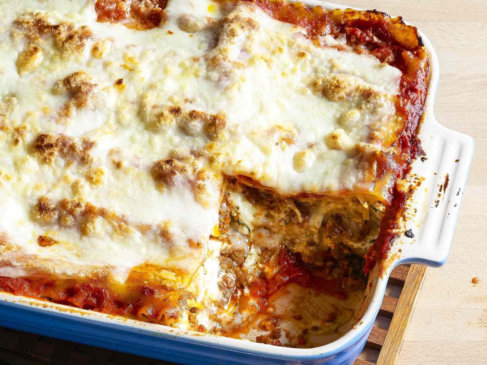

Lasagna

Description:
Lasagna is a wide, flat sheet of pasta. Lasagna can refer to either the type of noodle or to the typical
lasagna dish which is a dish made with several layers of lasagna sheets with sauce and other
ingredients, such as meats and cheese, in between the lasagna noodles
Ingredients:
- Meat
- Onion and garlic
- Tomato products
- Sugar
- Spices and seasoning
- Lasagna noodles
- Cheeses
- Egg
Steps to follow:
- Preheat the oven. Set it to 375 F degrees
- Brown the beef:
- In a sauce pan or skillet, cook the ground meat until no longer pink.
- Add chopped onion, 1 tbsp of the oregano, salt, pepper and continue cooking until onion is cooked.
- Prepare the sauces:
- Add the marinara sauce to the skillet and the cup of water.
- Stir and bring to a boil. Remove from heat and set aside.
- In a small bowl combine the ricotta cheese, 1 tbsp oregano, eggs, Parmesan cheese, salt and pepper.
- Stack the lasagna:
- In a baking dish, start assembling your lasagna.
- Start with couple ladles of the sauce at the bottom, this is necessary now that the noodles aren't cooked.
- Lay 3 lasagna noodles over the meat sauce.
- Next layer with ricotta mixture and about 1/2 cup of the mozzarella cheese.
- Repeat until you have 4 layers of noodles, and end with ricotta cheese and mozzarella cheese.